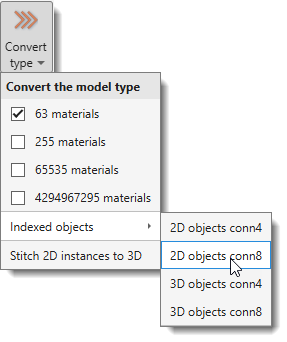
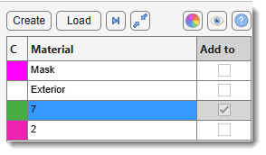
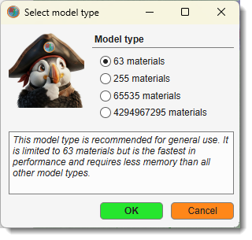
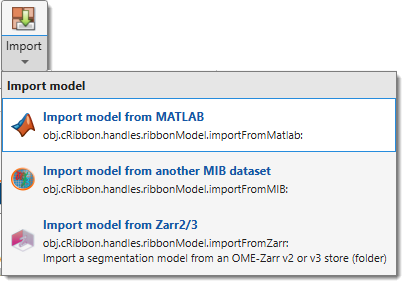

Model Ribbon Tab¶
Back to MIB | User interface | Ribbon
Overview¶
Actions that can be applied to the Labels layer. The Labels layer is one of three main segmentation layers (Labels, Selection, Mask) which can be used in combination with other layers. See more about segmentation layers in the Data layers section.

Convert Section¶
Convert type¶

Convert the model to a different type; the current type is indicated in the ribbon. The Labels, Selection and Mask layers are backed up before the conversion, so it can be undone with Ctrl+Z, which brings back the previous model type together with its materials and colors.
- 63 materials (default): Stores Labels, Selection, and Mask layers in a single memory container, reducing memory requirements with some performance costs and limiting materials to 63.
- 255 materials: Allows up to 255 materials, requiring additional memory for Selection and Mask layers (doubles memory usage).
- 65535 materials: Allows up to 65535 materials, requiring ~1.25× more memory than 255 materials. The Segmentation panel appearance changes in this mode.
Short demonstration - 4294967295 materials: Allows up to 4294967295 materials, requiring twice the memory of 65535 materials.
Detects objects in all materials and generates a new model where each object has a unique index:
- 2D objects conn4: 2D connected objects, 4-connectivity.
- 2D objects conn8: 2D connected objects, 8-connectivity.
- 3D objects conn4: 3D connected objects, 4-connectivity.
- 3D objects conn8: 3D connected objects, 8-connectivity.
Example: standard model converted to indexed objects

How to work with models having more than 255 materials


Select materials by:
- Right-clicking the segmentation table and choosing Rename... or by pressing F2
- Hovering over an object in the Image View panel and pressing Ctrl+F.
Links a stack of independently segmented 2D instances into consistent 3D objects. Unlike the Indexed objects options above - which turn a semantic model into indexed objects by connected-component analysis - this expects a model whose slices are already per-slice 2D instances, typically the raw output of a 2D instance-segmentation prediction where the same object carries a different index on each slice.
Objects that overlap between neighbouring slices are merged into a single 3D instance with one index through the whole stack. The current model is backed up first, so the operation can be undone with Ctrl+Z. The result is stored as a 65535- (or 4294967295-) material indexed model, one index per 3D object.
A settings dialog collects the linking parameters:
| Setting | Description |
|---|---|
| Method | graph (default) links every overlapping pair of objects on neighbouring slices and groups them by connected components - handling objects that split into pieces or merge together between slices; hungarian performs strict one-to-one matching per slice pair (empanada / MitoNet style) plus a containment merge for the leftovers. |
| IoU threshold (0-1) | Join two objects when (overlap area) / (their union area) exceeds this. Higher = stricter, giving more but smaller 3D objects. |
| Merge split objects (IoA) | Checkbox. When enabled (default), objects are also joined when a smaller object is mostly contained in a neighbour — i.e. (overlap area) / (area of the smaller object) is high — reconnecting a 3D object that briefly breaks into small pieces on one slice. Uncheck to link by IoU only. |
| Min overlap (pixels) | Require at least this many overlapping pixels before two objects may be linked, to block tiny spurious touches from fusing unrelated objects. |
| Z lookback (slices) | How many slices apart to compare. 1 = adjacent slices only; higher values also compare a slice with one further away, bridging an object that briefly disappears. |
| Min object size (voxels) | After stitching, delete any 3D object smaller than this many voxels. 0 = keep all; raise it to remove single-slice noise fragments. |
| Anisotropic Z (use pixel size) | Checkbox. For datasets with thick Z sections, a real continuation is displaced more between slices, so its IoU legitimately drops. When enabled, the IoU threshold is lowered by the voxel aspect ratio (pixSize.z / pixSize.x) read from the dataset, so a displaced continuation still links. Pair it with Max centroid shift to keep the relaxed threshold from fusing distant objects. |
| Max centroid shift (pixels) | Reject a link when the two object centroids are farther apart than this (scaled by the slice gap when Z lookback > 1). 0 = disabled. Useful together with anisotropic-Z relaxation to prevent a lower IoU threshold from merging far-apart objects. |
| Centroid link radius (pixels) | Advanced gap bridging for anisotropic or gappy data. For an object that has no overlapping neighbour on the next compared slice, link it to the mutually-nearest such object within this distance (scaled by the slice gap) if they are of comparable size — reconnecting a continuation that is laterally displaced or briefly missing. 0 = disabled. Leave off for near-isotropic data. |
Note
This entry is intended as the 3D post-processing step for the 2D Instance DeepMIB workflow: run 2D instance prediction slice-by-slice, then stitch the per-slice result into 3D objects here.
Tip
On noisy real data the most effective cleanup is Min object size — single-slice detection fragments otherwise appear as spurious extra objects. On a dense benchmark (salivary-gland mitochondria) a value of ~50-200 voxels removed the great majority of spurious fragments and roughly doubled the number of correctly reconstructed 3D objects, without affecting the genuine ones. Start there before adjusting the linking thresholds.
Import Section¶
New model¶

Allocates space for a new model. Use this to start a new model or delete the existing one.
Alternatively, use the button in the Segmentation Panel.
For model types see Convert type above.
Load model¶
Loads a model from disk. By default, MIB reads models in MATLAB format (.model), but other formats are supported.
- AM, Amira Mesh: Amira Mesh label field for models from Amira.
- NRRD, Nearly Raw Raster Data: Compatible with 3D Slicer.
- MRC, Medical Research Council format: Compatible with IMOD. Can load multiple MRC files, each encoding an object, and merge them into a single model.
- PNG, PNG format: Saves models as 2D slices in Portable Network Graphic format.
- TIF, TIF format: Saves models as 2D slices or 3D volumes in Tag Image File format.
Tip
Almost any standard image format can be loaded as a model using the All files (.) filter in the Open model dialog.
Alternatively, use the button in the Segmentation Panel.
Note
Models can also be opened by drag-and-dropping model files into the Image Document.
Note
When a loaded model carries no material names of its own (format-dependent - some formats, like
Zarr, may or may not embed names), materials are auto-named mat1, mat2, … For models with more
than 255 materials, plain numeric names are used instead, since the number is the material index
- see the note on working with such models in Convert type above.
Import¶

Imports a model from an external source.
The Import dropdown contains:
Import model from MATLAB¶

Imports a model from the main MATLAB workspace.
Provide a variable name with a matrix matching the dataset dimensions [height, width, depth] of uint8 class, or a structure with the fields below.
- .model: Matrix
[height, width, depth, time]ofuint8class. - .modelMaterialNames (optional): Cell array with material names.
- .modelMaterialColors (optional): Matrix with colors (0-1)
[materialIndex, R G B]. - .labelText (optional): Cell array with annotation labels.
- .labelPosition (optional): Matrix with annotation positions
[annotationIndex, x y z].
Import model from another MIB dataset¶

Copies the model from another currently open MIB dataset into the active dataset.
Import model from Zarr⅔¶
Imports a segmentation model from an OME-Zarr v2 or v3 store. A Zarr store is a folder (not a single file), so this option opens a folder browser instead of the file dialog used by Load model and the other Import options above.
- Zarr v3 (
.zarr3): read using the nativezarr-matlablibrary. - Zarr v2 (
.zarr2): read using a python-backed reader (zarr/numpy), since Zarr v2 has no native MATLAB engine. Requires Preferences → External directories → Python installation path to point at a python environment with thezarrpackage installed.
Material names/colours are resolved from the store's metadata, in this order:
- MIB's own
mibMaterialsattribute (the same one written by Export model to Zarr3). - The OME-NGFF
image-labelconvention (colors/properties). - If neither is present, materials are auto-named
mat1,mat2, … with random colours.
Note
For a BigData dataset, importing a Zarr model attaches the store by reference instead of loading it into memory (see BigData datasets). A Zarr v3 store becomes a fully editable, disk-backed model, same as models created directly in BigData mode. A Zarr v2 store is attached read-only - an existing segmentation can be viewed and browsed at any zoom level, but voxels cannot be edited, since there is no editable on-disk pyramid format for Zarr v2.
Export Section¶
Save or export the model to files and external programs.
Export¶

Exports the model to an external destination. The Export dropdown contains:
- Export model to MATLAB: Exports to the main MATLAB workspace as a structure (see Import model from MATLAB for structure fields). Can be re-imported using Import model from MATLAB.
- Export model to another MIB dataset: Copies the model into another currently open MIB dataset.
- Export model to Imaris as volume: Exports to Imaris if available. See System Requirements for details.
-
Export model to Zarr3: Export the model as a chunked, pyramidal OME-Zarr v3 store (
.zarr3) - material names and colours are preserved; reopenable in MIB as a BigData model and by external OME-Zarr-compatible toolsExport to Zarr3 - dialog settings (model)
A settings dialog appears after choosing the output path. Defaults are adapted to the open dataset dimensions (WSI vs. 3-D volumetric).
Setting Description Pyramid levels (0 = auto) 0= auto: starts at full resolution, adds levels while min(Y, X) / 2 ≥ 256 px, up to 8 levels. Enter 1-12 to force a fixed count.Chunk size [Y, X, Z] Zarr chunk dimensions in pixels. Shard X-factors [Y, X, Z] Chunks to bundle per axis into one shard file (0 on any axis = no sharding). Compression zstd(default),gzip,none.Downsampling method See table below. The downsampling strategy is always XY only for models - Z is never averaged, since that would mix material indices across boundaries. Downsampling method
Method Speed When to use nearest (default) fast Most models - picks the nearest source pixel; exact label integers are preserved. mode slow Fine structures, thin boundaries - picks the dominant label in each output block (majority vote). More semantically accurate; ~4-8× slower than nearest. Smart defaults (computed from the open dataset)
Dataset type Chunk [Y, X, Z] Shard X-factors WSI (Z ≤ 2 slices or max(Y, X) ≥ 8 000 px) 512 × 512 × 1 4 × 4 × 1 3-D, near-isotropic (vxZ < 2 × vxXY) 128 × 128 × 64 4 × 4 × 1 3-D, anisotropic (vxZ ≥ 2 × vxXY) 256 × 256 × 16 4 × 4 × 1
Save model¶
Saves the model to a file in MATLAB format without prompting for a filename.
- Default template:
Labels_NAME_OF_THE_DATASET.model. - Otherwise, the filename from the last Save model as... operation.
- Otherwise, the filename assigned when the model was loaded.
Info
Can also be saved using the Save model button in the Quick Access Bar.
Save model as...¶
Prompts for a filename and format to save the model.
- AM (Amira Mesh): RAW, RAW-ASCII, or RLE compressed formats (RLE is slow).
- MAT (MATLAB format): Native format for MIB version 1.
- MODEL (MATLAB format) (default): Native format for MIB version 2.
- MOD (IMOD format): Contours for IMOD.
- MRC (IMOD format): Volume for IMOD.
- NRRD (Nearly Raw Raster Data): Compatible with 3D Slicer.
- OME-Zarr v3 (*.zarr3): Chunked, pyramidal OME-Zarr v3 store. Material names and colours are preserved; labels are downsampled with nearest (fast) or mode (majority-vote, more accurate for fine structures); reopenable as a BigData model and by external OME-Zarr tools. Choosing this format opens an export-settings dialog - see Export model to Zarr3 for all options.
- PNG: 2D slices in Portable Network Graphic format.
- STL (STL format): Triangulated mesh for visualization programs like Blender.
- TIF (TIF format): 2D slices or 3D volumes.
Exporting a pyramid level (BigData models)
For a disk-backed BigData model, the Save model as... dialog adds a selector (s0 = full resolution … sN = coarsest). The chosen level is streamed to disk one slice at a time, so the full model is never loaded into memory. Per-slice streaming is available for TIFF, the native MODEL (*.model), HDF5 and OME-Zarr v3; other formats write the selected level as a whole.
BigData models - format compatibility & memory use
All formats above can save a BigData model at the chosen pyramid level. They differ only in how much memory the write needs:
| Format | BigData | Memory-optimized (streamed slice-by-slice) |
|---|---|---|
MODEL (*.model) - native |
✅ | ✅ disk-backed matfile |
| TIF | ✅ | ✅ |
HDF5 (*.h5) |
✅ | ✅ |
OME-Zarr v3 (*.zarr3) |
✅ | ✅ |
| AM, MAT, MOD, MRC, NRRD, PNG, STL, mibCat | ✅ | ❌ selected level is gathered whole before writing |
Use the dropdown to bound memory - a coarse level is small. The memory-optimized formats never hold even one full level in memory, so prefer them when exporting the full-resolution level (s0) of a large model.
Model tools Section¶
Materials¶

Operations for model materials, also available by right-clicking the Segmentation table.
The Materials dropdown contains:
- Rename material: Rename the selected material.
- Add material: Add a new material to the bottom of the list.
- Insert material: Insert a material at a specified position, shifting others down.
- Swap materials: Swap positions of two materials.
- Reorder materials: Reorder materials with a new sequence.
- Import material: Import selected materials (names, colours, and voxels) from a saved model file into the current model. You choose which materials to import; they are appended as new materials and their voxels overwrite the current ones where they overlap. For disk-backed BigData models the source is matched to the closest pyramid level and resized to fit.
- Export material: Export the selected material to MATLAB or Imaris.
- Save material to file: Save the selected material to a file.
- Remove materials: Remove selected material(s) from the model.
List of annotations¶

Operations for the Annotations layer.
The List of annotations dropdown contains:
- List of annotations: opens the annotations window (see Segmentation Tools).
- Export to Imaris as Spots: exports annotations as Spots in Imaris (export the dataset first).
- Remove all annotations: deletes all annotations in the model.
Render¶

Renders segmented models using various methods. The Render dropdown contains:
MIB rendering¶

Materials can be visualized in MIB with hardware-accelerated volume rendering (MIB 2.5+, MATLAB R2018b+). Datasets can be downsampled. Snapshots and animations are supported.
See more: MIB 3D Viewer
Introduction to updated 3D viewer
Original version of 3D viewer
MATLAB isosurface¶

Uses MATLAB to generate and visualize isosurfaces with a modified view3d function by Torsten Vogel.
- Double
to restore the original view. - other controls available from a toolbar menu in the upper-right corner and via
MATLAB volume viewer¶

Renders the model using MATLAB's Volume Viewer (R2017b+). In R2019b+, materials can be displayed alongside the volume.
 only for the MATLAB version of MIB
only for the MATLAB version of MIB
Fiji volume viewer¶

Uses Fiji 3D Viewer for volume visualization.
Requires Fiji installation (see System Requirements).
Imaris surface¶

Renders the model in Imaris. Requires Imaris and ImarisXT (see System Requirements).
The rendered material is specified in the Materials list of the Segmentation Panel.
Quantification Section¶
Quantify¶
Gets quantification statistics for the selected material, usable to filter the model by object properties.

Accessible also via Segmentation Panel → Materials List → Right-click → Quantify material...
See Mask and Model Quantification for details.
Back to MIB | User interface | Ribbon